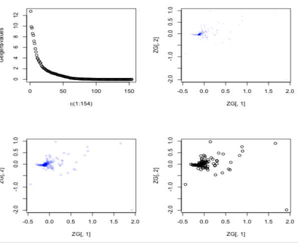

Principal component analysis (PCA) is one of the most widely used methods for dimensionality reduction. Why might we want to reduce the dimension of our data? Doesn't that mean that we're losing information? Well... yes, but this can be a good thing if what we're throwing away is the bits of our data that aren't useful! When we have more concise information, it is more interpretable, and if we can effectively condense our masses of information into smaller, more concise, parcels of information then that's just great! Dimensionality reduction is used for a huge array of reasons including visualization, faster computation, smaller storage and faster communication of data and it can even be considered to be a form of regulatization (by indirectly reducing the variance of our estimation).
The idea behind PCA is that we want to decompose our variables into informative orthogonal components consisting of linear combinations of the original variables. We want to find the components which posess the smallest ($L^2$) distance from the original data. There are a number of different algorithms to produce these components for example by using singular value decomposition (SVD) or eigen decomposition: Let $G = X^TX$ be the sample covariance matrix which is symmetric. The eigenvalue decomposition of $G$ is given by
$$G = UDU^T$$
where $U$ is unitary or orthogonal matrix (that means $U^TU = I$) and $D$ is a diagonal matrix with non-negative diagonal entries that are the eigenvalues of $G$. Let the $j$th column vector of $U$ be $U_j$ and of $D$ be $d_j$, that is
$$GU_j = d_j U_j$$
The prinicpal components are linear combinations of the original variables in our data, and the idea is typically that we want to use some of these principal components as our new variables (typically those that capture the most variability within the data). Why might we be weary of considering linear combinations of our data, rather than considering each variable individually? One of the primary reason is that we lose interpretability. What does a principal component measure?
The first prinicipal component is the linear combination of the variables that captures the most variability within the data, while the second principal component is the linear combination that captures the most variability that is not captured (or is left over) by the first principal component, and so on and so forth.
Another way to think about the principal components is that we want to find the projection of the data such that along that projection, the variability is maximized.
It is common to center the data prior to conducting PCA.
Let's walk through the theoretical steps: Do it
PCA has a huge array of uses in the realm of dimensionality reduction. It is widely used and is ideal for multivariate Gaussian data with degeneracy. It is incredibly useful for visualization of complex datasets.
In 2001, the US energy company the Enron Corporation was caught up in a corruption scandal that led to the bancruptcy of the company. The company used accounting loopholes, special purpose entities and poor financial reporting to hide billions of dollars in debt from failed deals and projects. As a result of the investigation, a large portion of the corporation's emails between November 1998 and June 2002 became public.
The emails create a directed network on 154 employees, so our data consists of a $154 \times 154$ matrix, $E$, consisting of Enron employees and their positions within the corporation. Let's define the adjacency matrix $A$ where $A_{ij}$ is the number of emails from person $i$ to person $j$. Below we will use PCA on the matrix $A$ to explore the data and learn about the employees.
If we conduct PCA on $A$, the sum of the variance captured by the first two principal components is 71.6\% of the total variability in the data (the top left screeplot belop shows that the first two components capture a substantial amount of the information). Employee 20 dominates the first principal component (the outlier in the upper right corner of the plot of PC1 against PC2), and the second principal component is dominated by Employee 57 (the outlier in the bottom left corner of the plot of PC1 against PC2).
Are these results informative? In fact, employee 20 (Jeff Dasovich, the Legal Regulatory and Government Affairs Director, a senior employee) sent an extremely large numbers of emails to 4 or so people. This made him an outlider, which resulted in him dominate the first principal component due to his large $L^2$-norm. This illustrates that it is a good idea to remove outliers before performing PCA, since PCA assumes Gaussianity (by using the $L^2$-norm), which is easily swayed by outlying observations. Employee 57 (Tana Jones, the ENA Legal Specialist, a junior employee), also sent large numbers of emails to 4 or so people, but not as many as Jeff Dasovich. As a result, Tana Jones dominated the second principal component.
The other outliers on the first principal component, we find that these are also legal employees who have sent relatively large numbers of emails to the same group of people (which explains why the show up along the same direction as the first component). Employees 3 (a VP) and 59 (a manager at West Power) received many emails from all three legal employees.
The second component contains a number of outliers, who again, sent many emails to a particular group of people.
What if we instead centered and scaled the data, we found much more meaningful rsults. We obtain one large eigenvalue and many smaller eigenvalues with no big gaps. Taking the top 5 components, we explain 32\% of the variability, whereas taking the top 10 principal components we explain 50\% of the variability. The top two principal components don't appear to be a good representation of the data. However, if we consider the data that we have, it might make sense that $L^2$ is not a meaningful metric to use; perhaps $L^1$ scaling makes more sense since we are dealing with count data...

The outliers in the first component are employees 20, 37, 41, 61, 63, 65, 72 and 88 who do not share the same receivers of emails, moreover except for employee 20, the rest are all from trading or other departments. The outliers on the second component direction are employees 24, 37, 57, 63, 65 and 96, who are all from trading and other departments except for 57 whom we saw in our unscaled analysis.
The above PCA analyses are suggestive to give leads for further follow-up studes, however they are not conclusive in any sense! We note, however, that Employee 20 (Jeff Dasovich) and Employee 57 (Tana Jones) both appeared in news reports related to the Enron investigation.
As a rule of thumb, if you're not sure whether or not you should center and scale your data, do both and compare the results so that you can make a reasonable judgement call. However, in order to avoid one predictor having an undue influence on the principal components, it is common to first standardize the predictors to have mean zero and variance 1 before conducting PCA. Therefore PCA analysis has the following steps:
Center the predictors to have mean 0
Form the sample covariance matrix, $G$
Carry out an eigenvalue decomposition of $G$ to get eigenvalues $d_1 \geq ... \geq d_p \geq 0$ and the corresponding eigenvectors $U_j$
Keep all the large principal components that account for most of the variation in the data. For example, starting with 20 predictors it might be the case that the first 4 components account for $90\%$ of the total variation, i.e. the sum of the first 4 eigenvalues is about $90\%$ of the totla sum of all eigenvalues.
In the Enron study, we are looking for the outliers!
Recall that for the fruitfly project, we have a number of images of drosophila embryos in each of which we have stained for certain genes. Since each embryo has a different size and shape, to make the embryos comparable, we must first find the outline of the embryo in the image and then warp it into a common ellipse as shown in the graphic below.
We then used PCA on the data from approximately 7 images to obtain the principal components shown below, where the colour of each component corresponds high intensity (red) and low intensity (blue).
Unfortunately, the components identified by PCA for the fruitfly data didn't seem to be biologically interpretable. An alternative to PCA is Independent Component Analysis (ICA) which find the independent components by maximizing the independence of the estimated components by maximizing the non-Gaussianity. This has the effect of encouragins sparsity in the components. The resultant components for the fruitfly embros using ICA are significantly better than those obtained by PCA. We are finding the biologically meaningful stipes and segments known by biologists.
The reason that PCA doesn't work well is that it doesn't take advantage of the natural sparsity of the problem.
Regular prinicipal component analysis typically finds linear combinations of all variables, which resutls in the disadvantage that the resutant components are often hard to interpret. Sparse PCA attempts to ameliorate this issue by finding linear combinations of just a few input variables.
We will discover that another alternative is non-negative matrix factorization
We have introduced in this section several alternative (but related) approaches to the same problem: prinicpal component analysis, independent component analysis and non-negative matrix factorization. Why do these different approaches exist? Well it turns out they all work best under different circumstances, although under which circumstance your data problem lies might be hard to identify. It might be an idea to try all three approaches on your dataset, and if you find that the results are different, then you will learn a lot by asking why each method obtains different results. In fact, this is a good general rule for approaches with several possible methods, let's call it "method stability". If you are drawing a conclusion, you can gain confidence about the strength of the conclusion you're drawing if you can show that the results are robust to the specific method being used. In other words, conclusions are more believable if they hold when using many different analytical methods. This is a great way of showing that your conclusions are not simply an artefact of the method used. To compare results, it will be an even better idea to set aside a "validation set", say one third of your data, for "independent" comparison.